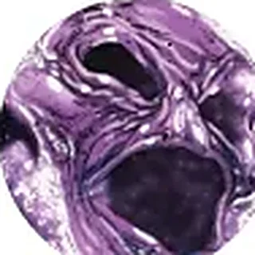

Encyclopédie › Entités abstraites
Naissance · Mal · Magie
Interprétation1ʳᵉ apparition · Marvel Two-In-One Annual #23 relations
Voir sur la carte · Les Axes
Lord Chaos : le désordre créateur, l’imprévisible, le hasard incarné.
Entités abstraites · l’équilibre des contraires
Entités abstraites · Naissance · Mal · Science

Entités abstraites · le désordre